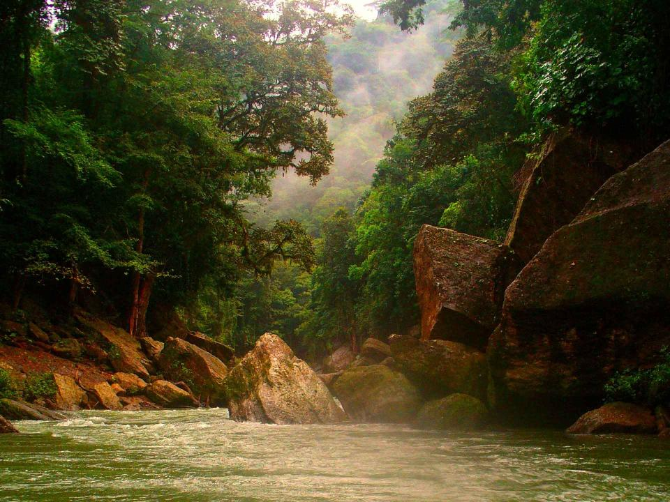

pagina principal
animales en honduras
parque nacional la tigra
biosfera del rio platano
plantas en honduras
la republica de honduras es un pais centroamericano geograficamente ubicado dentro de los tropicos, lo que le permite que su naturaleza brinde un habitad adecuado para la flora y fauna de especies especiales, y variadas pero a pesar de esto alguanas se encuentran en peligro de extincion. la flora de honduras es muy varida, las selvas lluviosas o pluvioselvas, tambien clasificado como bosque lluvioso tropical, es una de las mas impresionantes como formacion vegetal, los ecologicos la denominan formacion higrofia megatermica, por corresponder a regiones de gran humedad y constantes temperaturas altas, en los cuales se encuentra una especie dominante unica como pinos y abetos, cubriendo grandes areas.
los troncos de los arboles son rectos y lisos y sus primeras ramas nacen de gran altura dels suelo. la pluvioselva de honduras corresponde a la region norte por debajo de los 600 de elevacio, no hay estacion seca completamente definida y abarca un 29% de la superficie total del pais.
